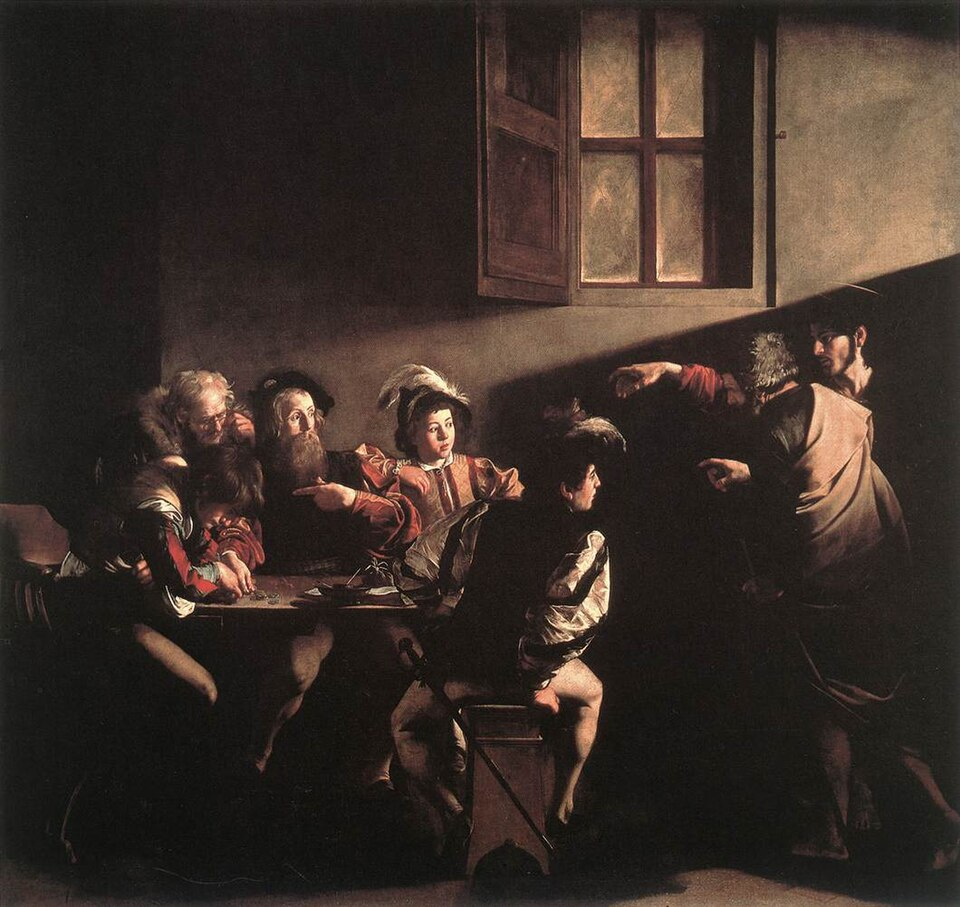
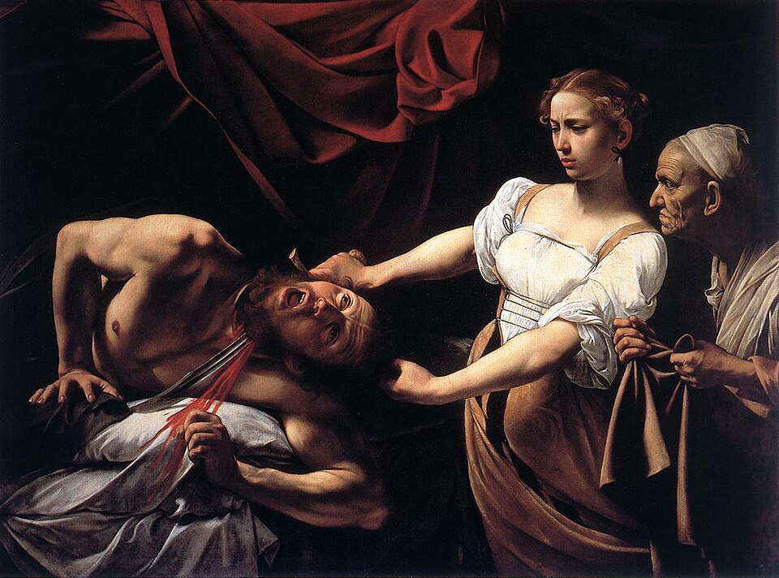
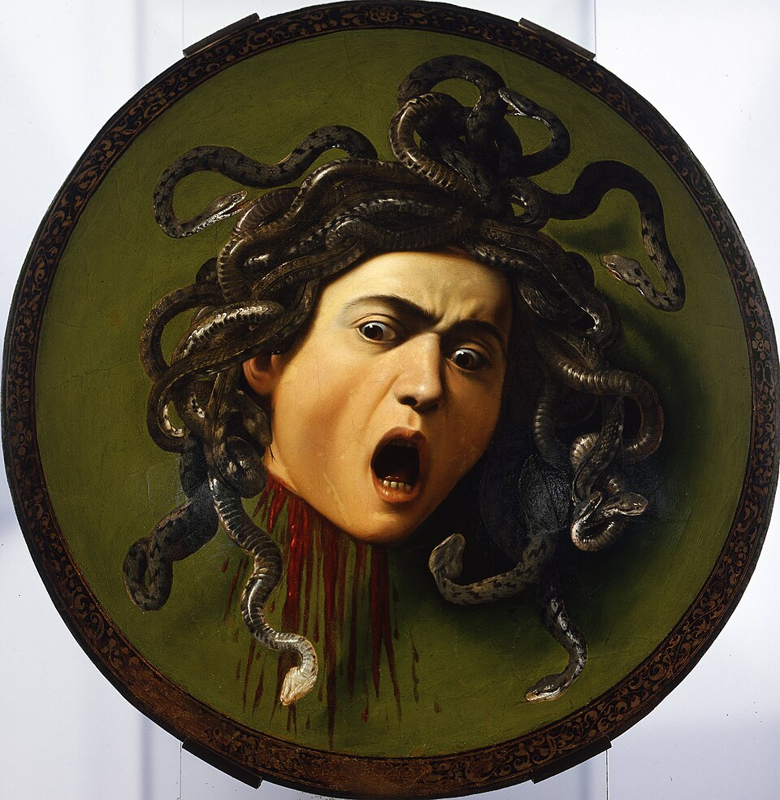
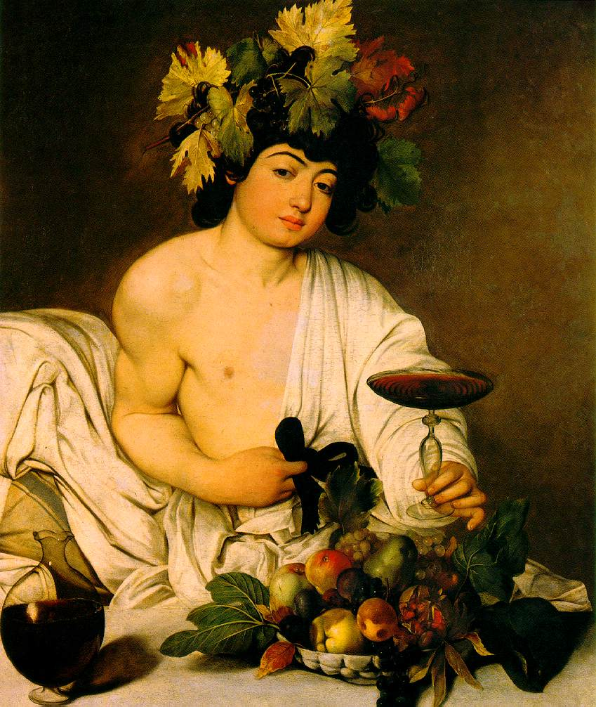
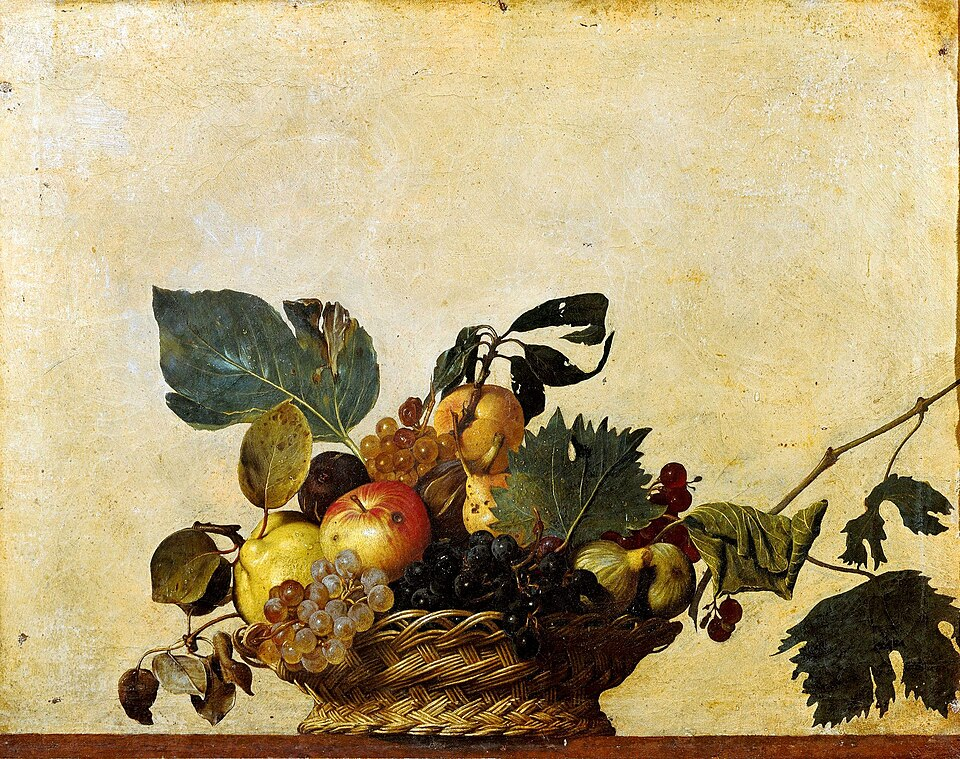
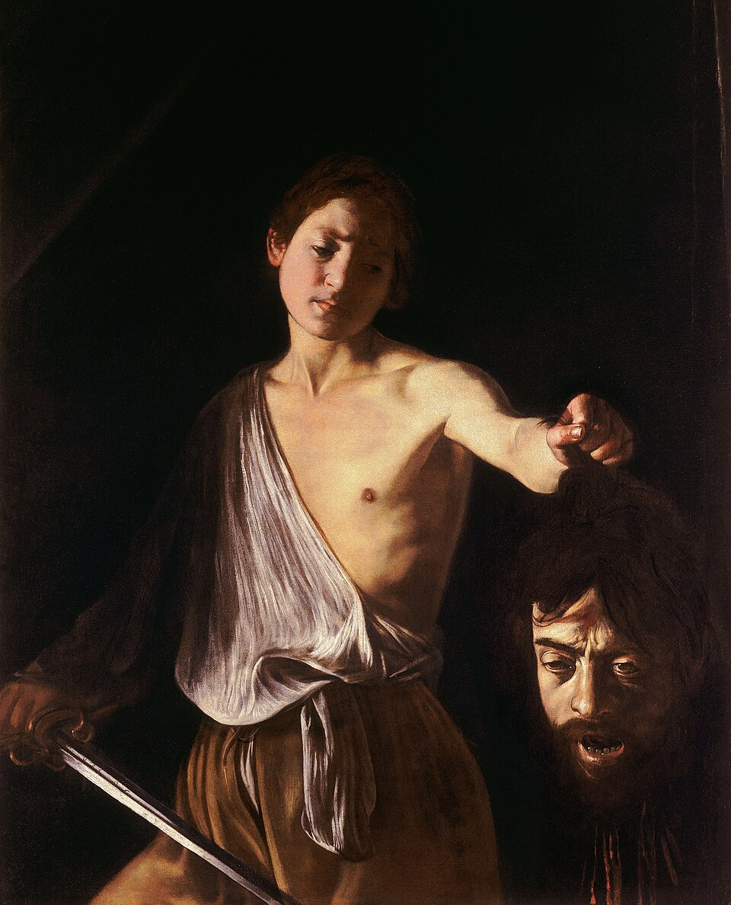

Galeria wybranych dzieł
Poniżej kilka najbardziej charakterystycznych obrazów Caravaggia.

Kaplica Contarellich, Rzym

Galleria Nazionale d'Arte Antica, Rzym

Galleria degli Uffizi, Florencja

Galleria degli Uffizi, Florencja

Pinacoteca Ambrosiana, Mediolan

Galleria Borghese, Rzym